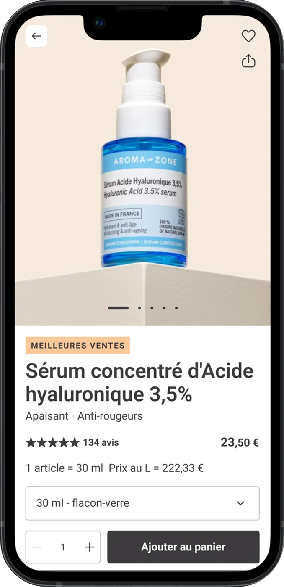
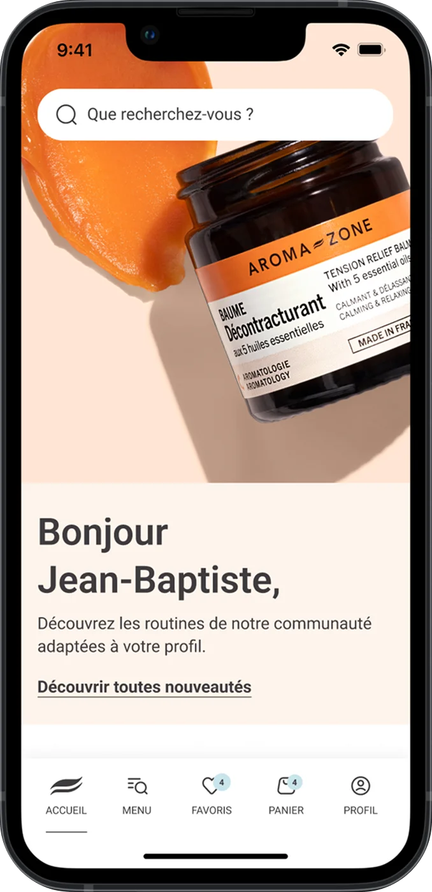
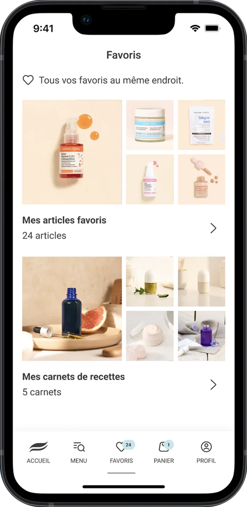
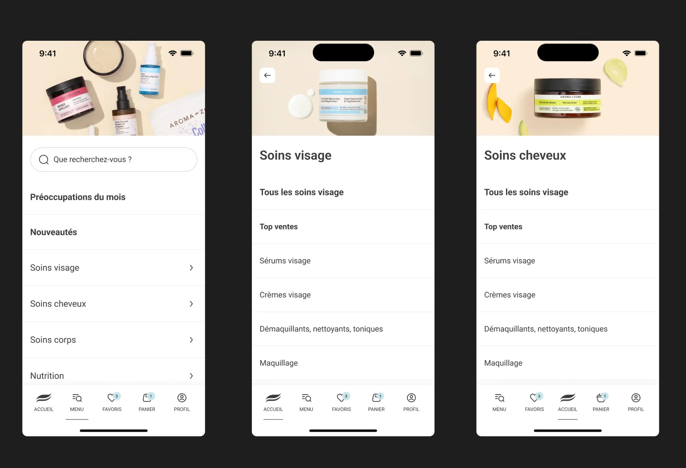

Le soin, au creux de la main.
- Rôle
- Lead Product Designer
- Périmètre
- Application mobile



Problématique
Offrir sur mobile une expérience d’achat à la hauteur de l’expertise Aroma Zone : guider la découverte d’un catalogue très riche, orienter chaque profil vers les bons soins et fluidifier le parcours jusqu’au panier.
Le parcours d’achat
Naviguer par préoccupation et par univers
Un menu à plat, une recherche mise en avant et des entrées par univers — soins visage, cheveux, corps, nutrition — pour trouver son produit en quelques gestes.

Recherche
Analyse des usages mobiles et des parcours existants pour comprendre comment les clientes choisissent leurs soins, comparent les produits et utilisent les recettes — et identifier les irritants à lever en priorité.
Parcours & UI
Navigation par préoccupation et par univers, accueil personnalisé, fiche produit centrée sur la décision, favoris et carnets de recettes réunis, panier simplifié — dans une direction visuelle chaleureuse et éditoriale, fidèle à la marque.
Impact visé
Un parcours d’achat plus court et plus lisible, conçu pour être mesuré : conversion, ajout au panier et usage des favoris comme indicateurs de suivi, au service de la fidélisation.